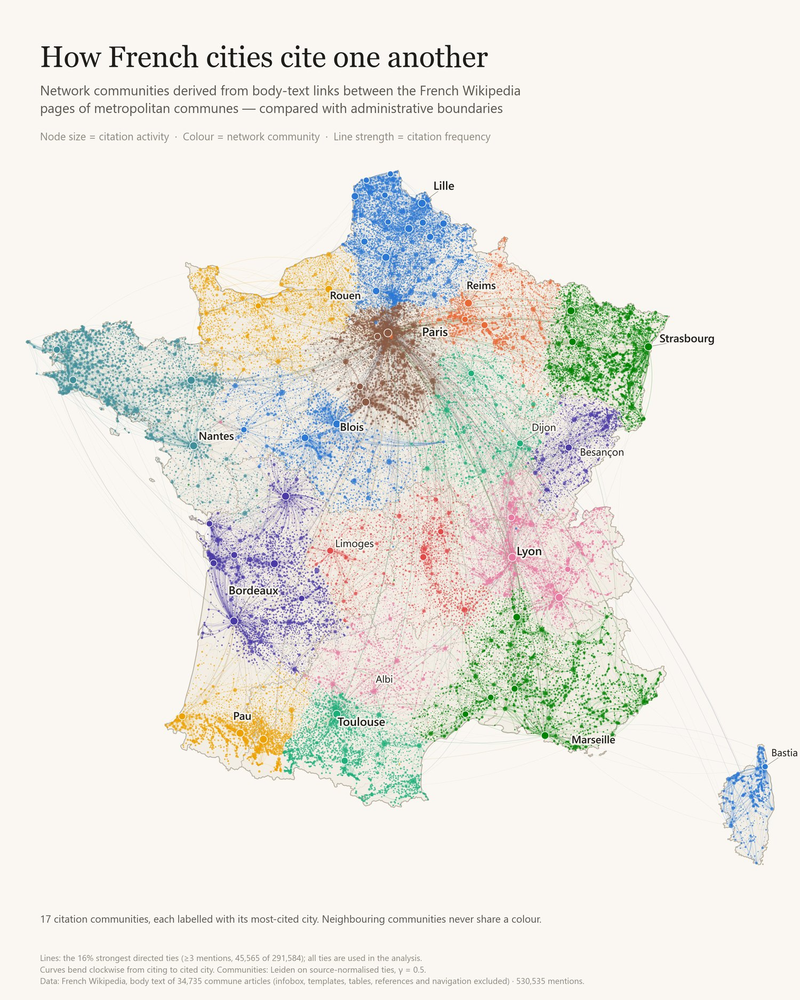
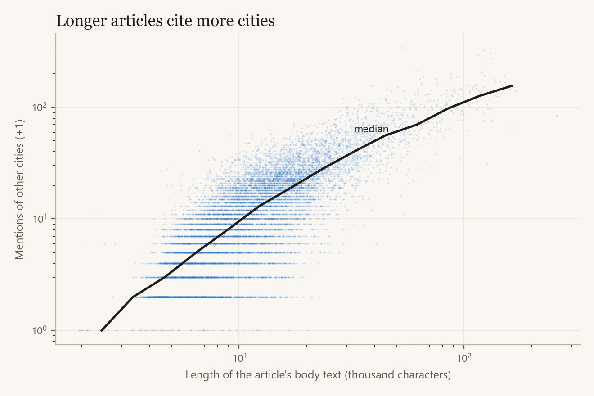
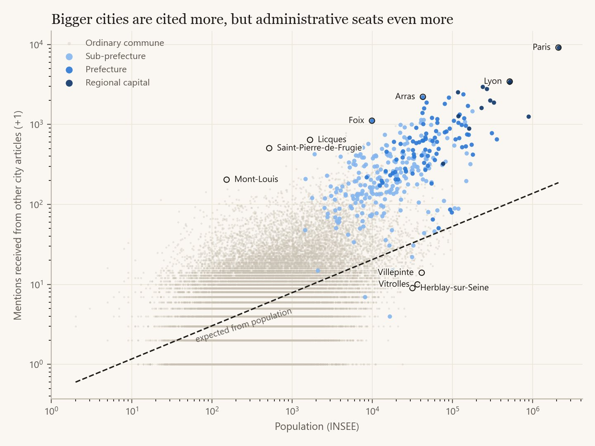
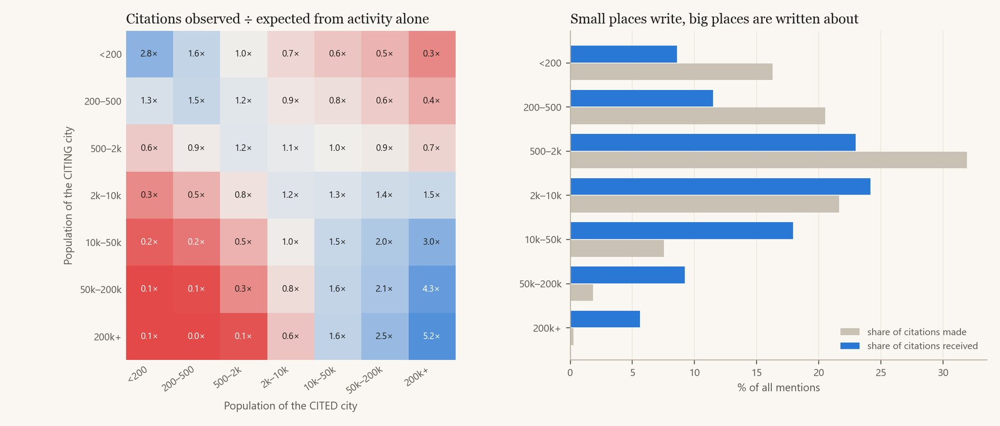
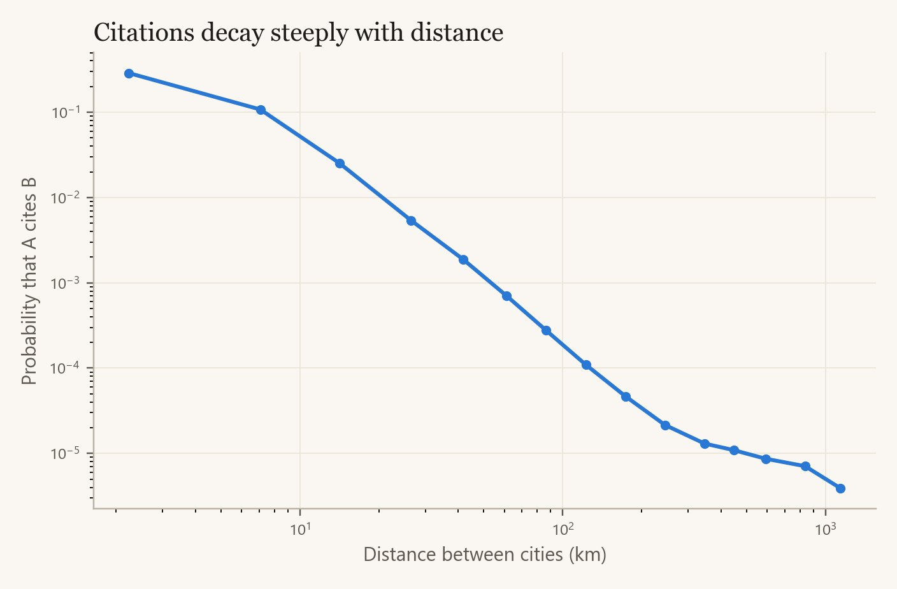
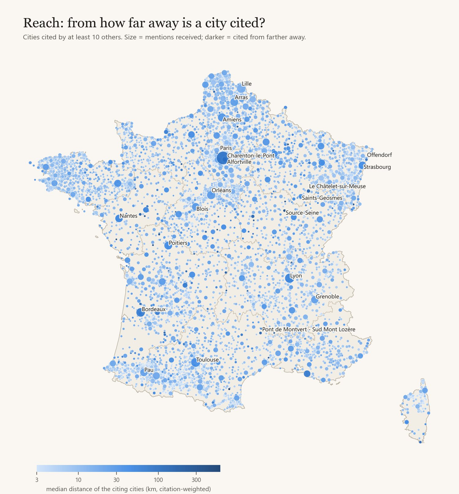
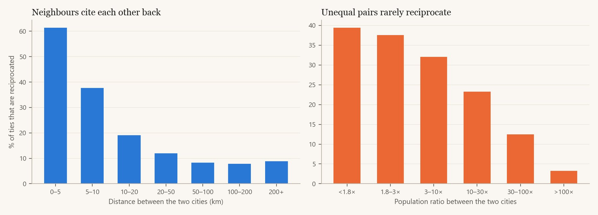
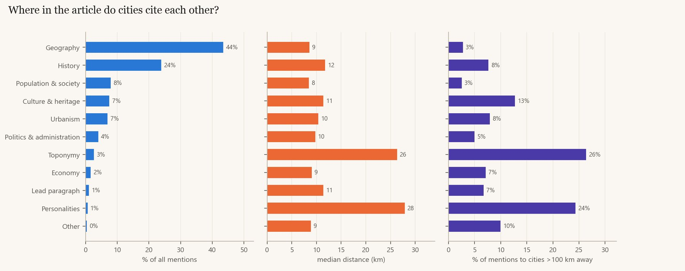
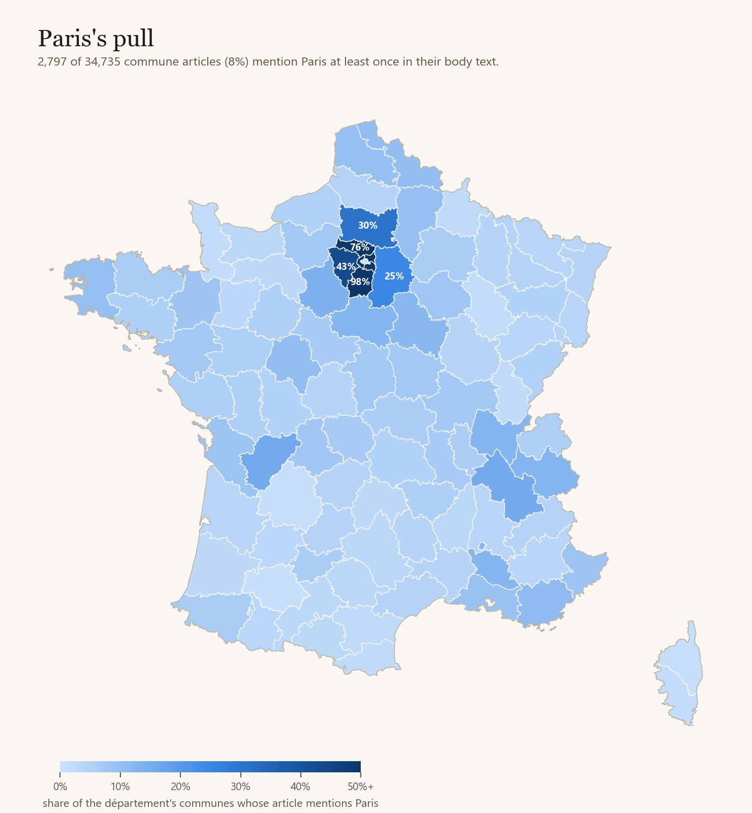
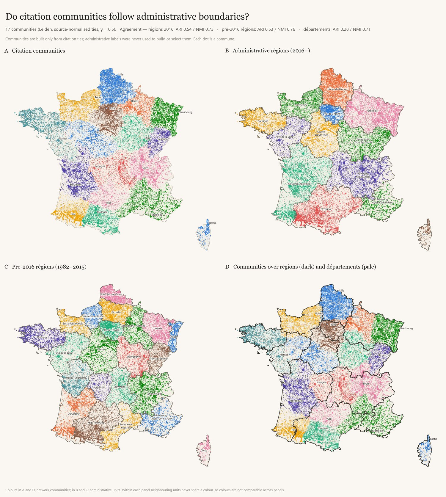

Network study · French Wikipedia · 34,735 commune articles
How the Wikipedia articles of French communes mention one another: who does the citing, who gets cited, how far citations travel, and which parts of an article produce them.
A citation is a mention of commune B in the running text of commune A's French Wikipedia article.
The source is the latest revision of every commune article in the corpus (35,118 pages). Each page is matched to its official INSEE commune code. Former communes that now belong to a merged commune are folded into it. Overseas communes and the 101 non-commune pages in the corpus (mostly département articles) are dropped. That leaves 34,735 metropolitan communes, Corsica included. Population, département and région come from the official geo.api.gouv.fr reference; the list of prefectures and sub-prefectures comes from the INSEE 2025 geographic code.
Only article prose counts. Before counting, everything that is not running text is removed:
In the remaining text, a mention of B is either a wikilink to B's article (directly or through a redirect: 36,000 redirects are resolved) or a later plain-text repeat of B's name in an article that links to B at least once. Links make up 74% of mentions, plain-text repeats 26%. Self-mentions are dropped, and so are names that are part of the citing commune's own name ("Cormeilles" in Cormeilles-en-Parisis).
The result is a directed, weighted network: 291,584 ties and 530,535 mentions. Most ties are thin: 69% consist of a single mention, and the heaviest carries 270.
Every commune is a dot at its real position; lines are the strongest 16% of ties.
The picture is dominated by short lines between neighbours, with star-shaped bursts around regional centres such as Bordeaux, Niort, Lyon, Toulouse and Blois. Only a thin web of long lines crosses the country, most of them pointing to Paris. Colours show 17 communities found from the citation ties alone; section 10 describes them.
The typical commune names 6 other communes (mean 8.4) and is named by 3. 4,665 communes (13%) are never mentioned by any other commune article; their median population is 235, against 517 for communes that are mentioned. 163 articles mention no other commune at all.

The amount of citing is set by how much has been written about a commune, not by how large it is.
The number of mentions an article makes rises almost one-for-one with its length (rank correlation 0.76). In a regression on both length and population, a 10% longer body text brings about 13% more mentions, and population has no effect (coefficient −0.006). Length alone explains 61% of the variation. The median article body is about 10,600 characters and contains 8.7 mentions of other communes per 10,000 characters.
Population matters only because larger towns get longer articles. Articles about communes under 200 inhabitants make a median of 6 mentions; articles about the 11 cities over 200,000 make a median of 140, because their bodies are about 20 times longer.

The most prolific citers are small communes whose volunteers wrote long local histories. Lumeau (Eure-et-Loir, 138 inhabitants) has a 264,000-character article dominated by the 1870 battles around Loigny and Orléans. It makes 990 mentions, including 270 of Orléans, the heaviest tie in the network.
| Commune | Département | Population | Mentions made | Communes named | Body (k chars) |
|---|---|---|---|---|---|
| Lumeau | Eure-et-Loir | 138 | 990 | 121 | 264 |
| Neublans-Abergement | Jura | 536 | 341 | 96 | 53 |
| Breuillet | Charente-Maritime | 3,058 | 323 | 39 | 122 |
| Genlis | Côte-d'Or | 5,093 | 305 | 80 | 131 |
| Étaules | Charente-Maritime | 2,857 | 295 | 45 | 115 |
| Saint-Georges-de-Didonne | Charente-Maritime | 5,092 | 276 | 66 | 132 |
| Fontenay-Trésigny | Seine-et-Marne | 5,994 | 274 | 76 | 148 |
| Jaligny-sur-Besbre | Allier | 559 | 262 | 103 | 160 |
Three of the top eight are neighbouring communes on the Charente-Maritime coast (Breuillet, Étaules, Saint-Georges-de-Didonne). Their articles are long and cite one another heavily, which shows how a few active local editors can create a dense cluster of cross-citing articles.
Being cited is far more unequal than citing, and it rewards administrative status more than size.
Mentions received are highly concentrated (Gini 0.76, against 0.54 for mentions made). The top 1% of communes, 347 of them, receive 33% of all mentions. Population matters, but less than one might expect: doubling a commune's population raises its expected mentions by about 33%, and population alone explains only 23% of the variation.
Administrative status matters much more. Adding the commune's role to the same regression gives, at equal population:
| Status | Count | Multiplier | Share of all mentions |
|---|---|---|---|
| Ordinary commune | 34,415 | 1× | 71.3% |
| Sub-prefecture | 224 | 9.8× | 11.6% |
| Prefecture | 83 | 16.8× | 10.8% |
| Regional capital | 13 | 32.4× | 6.3% |
Seats are where the département's roads, courts, markets and history converge, so prose about the surrounding countryside keeps returning to them. Templates reinforce the effect: the standard "distance to reference towns" paragraph and the INSEE urban-area paragraph usually name the local prefecture or sub-prefecture (section 8). The multipliers therefore mix real centrality with editorial convention.

Comparing each commune with what its population predicts gives two very different lists.
| Commune | Pop. | Received | × expected |
|---|---|---|---|
| Saint-Pierre-de-Frugie Dordogne | 520 | 504 | 84 |
| Licques Pas-de-Calais | 1,679 | 641 | 66 |
| Arras prefecture | 42,875 | 2,212 | 59 |
| Lamothe-Montravel Dordogne | 1,443 | 520 | 57 |
| Mont-Louis Pyrénées-Orientales | 153 | 203 | 56 |
| Foix prefecture | 9,934 | 1,113 | 55 |
| Saint-Pol-sur-Ternoise Pas-de-Calais | 4,677 | 782 | 53 |
| Paris | 2.1 M | 9,149 | 49 |
| Mirecourt Vosges | 4,700 | 723 | 48 |
| Blois prefecture | 47,219 | 1,881 | 48 |
| Commune | Pop. | Received | Expected |
|---|---|---|---|
| Herblay-sur-Seine Val-d'Oise | 31,779 | 8 | 32 |
| Vitrolles Bouches-du-Rhône | 36,758 | 9 | 34 |
| Saint-Laurent-du-Var Alpes-Maritimes | 32,172 | 10 | 32 |
| Villiers-le-Bel Val-d'Oise | 30,053 | 10 | 31 |
| Le Perreux-sur-Marne Val-de-Marne | 35,260 | 12 | 33 |
| Villepinte Seine-Saint-Denis | 41,470 | 13 | 36 |
| Maisons-Alfort Val-de-Marne | 56,799 | 16 | 41 |
| Fontenay-sous-Bois Val-de-Marne | 53,757 | 17 | 40 |
| Champigny-sur-Marne Val-de-Marne | 78,072 | 23 | 47 |
| Vitry-sur-Seine Val-de-Marne | 93,963 | 26 | 51 |
The under-cited list is made up almost entirely of suburbs of large metropolitan areas, mostly around Paris. These towns have many inhabitants, but their surroundings are other suburbs whose articles refer to Paris or to the département seat instead. Few small rural neighbours are left to cite them.
The over-cited list mixes two things. Administrative seats appear for the reasons above. The small towns get most of their mentions from standard wording repeated across the articles of their area. Saint-Pol-sur-Ternoise gets 91% of its mentions from Géographie sections, Mirecourt 55% from Population et société sections, and Mont-Louis most of its mentions from lead paragraphs and Géographie. The clearest case is a single sentence copied into hundreds of articles. Saint-Pierre-de-Frugie and Lamothe-Montravel are the highest and lowest points of the Dordogne, and nearly every Dordogne commune article carries the same sentence:
« Le département de la Dordogne se présente comme un vaste plateau incliné du nord-est (…à Saint-Pierre-de-Frugie) au sud-ouest (…à Lamothe-Montravel). »Antonne-et-Trigonant, Géographie, one of ~500 near-identical copies
Licques is a similar case: Pas-de-Calais articles describe their landscape as part of the "coteaux calaisiens et pays de Licques".
Citations flow from small places to larger ones and rarely come back down.
71% of all mentions point to a commune larger than the citing one; 31% point to a commune at least ten times larger, and only 3.6% to one at least ten times smaller. The flow is so one-directional that the size classes split into writers and the written-about:
| Population | Communes | Share of communes | Mentions made | Mentions received | Received per commune |
|---|---|---|---|---|---|
| under 200 | 8,799 | 25.3% | 16.3% | 8.6% | 5 |
| 200–500 | 9,449 | 27.2% | 20.5% | 11.5% | 6 |
| 500–2,000 | 11,090 | 31.9% | 31.9% | 23.0% | 11 |
| 2,000–10,000 | 4,409 | 12.7% | 21.6% | 24.2% | 29 |
| 10,000–50,000 | 865 | 2.5% | 7.5% | 17.9% | 110 |
| 50,000–200,000 | 112 | 0.3% | 1.8% | 9.2% | 437 |
| over 200,000 | 11 | 0.03% | 0.3% | 5.6% | 2,714 |

The heatmap adds a second pattern. Communes cite their own size class more than expected at both ends of the scale. The smallest villages cite each other 2.8 times more than chance, because their neighbours are other small villages. Cities over 200,000 cite each other 5.2 times more than chance. Large cities almost never mention small villages: 0.1 times what their activity would predict. Their articles talk about other cities, not about the countryside around them.
Most mentions do not leave the canton.
Weighted by mentions, the median citation covers 9.7 km. 51% of mentions point to a commune less than 10 km away, 76% to one less than 25 km away and 90% to one less than 60 km away; only 3% travel more than 200 km. For comparison, two communes picked at random are 393 km apart on median, and only 1.6% of random pairs are under 50 km apart, against 84% of actual ties.

About 29% of pairs under 5 km apart are tied, 2.6% of pairs 10–20 km apart, 0.07% at 50–75 km, and about 0.001% beyond 300 km. The decay is steep up to 200 km and then flattens: beyond that range, distance hardly matters any more and only national fame does.
How far a commune's citations come from depends on its size. Villages under 200 inhabitants are cited from a median of 5 km away, towns of 10,000–50,000 from 15 km, cities of 50,000–200,000 from 26 km, and cities over 200,000 from 47 km.
The median distance of a commune's incoming citations measures its reach. Among communes cited by at least 60 others, Paris has a reach of 86 km and Marseille 72 km. The rest of the top of the list is mostly river geography. Source-Seine, where the Seine rises, is cited from a median of 344 km by communes along the river. Charenton-le-Pont (155 km), where the Marne joins the Seine, and Le Châtelet-sur-Meuse (138 km), source of the Meuse, work the same way.
At the other extreme, large suburbs have almost no reach: Montreuil (112,000 inhabitants) is cited from a median of 2.9 km, Villeurbanne from 3.9 km, Saint-Denis from 5.6 km. Even Lille, with 3,000 mentions, is cited mostly from its own metropolitan area (15 km).

30% of ties are returned; between near neighbours, most are.
When A mentions B, B mentions A in 29.7% of cases (25% when weighted by mentions). Reciprocity depends on distance and on how alike the two communes are. 61% of ties between communes less than 5 km apart are returned, against 8% beyond 50 km. 39% of ties between communes of similar size are returned, against 3% when one is over 100 times larger than the other. A village names its prefecture, but the prefecture's article does not name the village.

| Pair | A → B | B → A | Distance |
|---|---|---|---|
| Carling ↔ L'Hôpital Moselle | 42 | 52 | 1 km |
| Arvert ↔ La Tremblade Charente-Maritime | 51 | 34 | 3 km |
| L'Isle-Adam ↔ Parmain Val-d'Oise | 31 | 32 | 2 km |
| Buissoncourt ↔ Haraucourt Meurthe-et-Moselle | 28 | 41 | 2 km |
| Gémozac ↔ Pons Charente-Maritime | 35 | 26 | 10 km |
| La Grave ↔ Villar-d'Arêne Hautes-Alpes | 37 | 24 | 2 km |
| Arvert ↔ Étaules Charente-Maritime | 23 | 61 | 2 km |
| Caudan ↔ Lanester Morbihan | 22 | 22 | 5 km |
| Corrençon-en-Vercors ↔ Villard-de-Lans Isère | 32 | 21 | 5 km |
| Fréjus ↔ Saint-Raphaël Var | 21 | 28 | 3 km |
The strongest mutual ties are between twin communes that share a history, an industry or a valley. Carling and L'Hôpital share a coal-mining and chemical-plant history. L'Isle-Adam and Parmain face each other across the Oise. La Grave and Villar-d'Arêne share a mountain pass, and Fréjus and Saint-Raphaël are a single urban area.
Geography paragraphs produce most citations; history and biography produce the long-distance ones.
French commune articles follow a standard outline, so each mention can be traced to its section. Géographie alone holds 44% of all mentions and Histoire another 24%. The two differ in reach. Geography mentions point to communes a median of 9 km away, and only 3% go beyond 100 km. Toponymy sections compare place names with distant homonyms (median 26 km, 26% beyond 100 km). Personnalités liées à la commune sections link people to the cities where they were born, studied or worked (median 28 km, 24% beyond 100 km, 7% to Paris).

Many French commune articles have been filled out by bots and semi-automated campaigns. These add the same paragraph to every article in a département or in the whole country, changing only the names and numbers. The two most common:
« …la température moyenne annuelle observée sur la station météorologique de Météo-France la plus proche, sur la commune de Lesquin… »Climate paragraph, here in the Lannoy article
« …Incourt est une commune située, à vol d'oiseau, à … de la commune d'Hesdin-la-Forêt, à … de la commune de Saint-Pol-sur-Ternoise… »Distance paragraph, Pas-de-Calais
To measure their weight, every paragraph of every article was classified by its wording, and links to commune articles were counted in each type:
Together, these formulaic paragraph types hold 29% of the 405,000 links to communes, and 97% of articles contain at least one. Each type has its own favourite targets:
A simple test finds the communes whose fame is mostly a product of templates. These are ordinary communes cited by at least 80 articles, more than 85% of the time in Géographie, from a single département in most cases. There are 53 of them, and they account for 6,796 ties (2.3% of the network). The list is headed by the two Dordogne extremes, Ectot-lès-Baons, La Ferté-Alais, Saint-Pol-sur-Ternoise and Avesnes-le-Comte.
Why this matters. Templates are written per département or per INSEE zone, so they pull the network towards administrative and statistical geography. Any comparison between citation communities and administrative units partly measures how Wikipedia's bots were configured, not only how places relate to one another.
Paris is not a dominant hub, but it is the only city cited from everywhere.
Paris receives 9,149 mentions from 2,797 commune articles: 8% of all communes, but only 1.7% of all mentions. The ten largest cities together receive 5.3%. The network is not organised around Paris.
What sets Paris apart is how its pull changes with distance. 90% of communes within 25 km mention Paris and 54% at 25–50 km, falling to 19% at 50–100 km. Beyond 200 km the share stops falling and stays at about 5% all the way to the Pyrenees and the Mediterranean. No other city has that floor.
| City | Citing articles | within 50 km | 100–200 km | beyond 300 km |
|---|---|---|---|---|
| Paris | 2,797 | 66% | 6.6% | 5.4% |
| Toulouse | 1,347 | 71% | 10.8% | 0.3% |
| Lyon | 1,215 | 51% | 5.1% | 1.0% |
| Bordeaux | 1,129 | 59% | 8.8% | 0.5% |
| Strasbourg | 669 | 53% | 3.8% | 0.3% |
| Lille | 582 | 44% | 2.2% | 0.2% |
| Nantes | 551 | 73% | 5.1% | 0.2% |
| Marseille | 518 | 66% | 5.0% | 0.6% |
| Rennes | 489 | 54% | 4.0% | 0.1% |
| Montpellier | 298 | 42% | 2.0% | 0.1% |
| Nice | 194 | 39% | 3.6% | 0.2% |
Paris receives 22% of all mentions that travel more than 300 km. The next targets, Lyon (3.1%), Marseille (2.0%) and Bordeaux (1.8%), are far behind. Mentions of Paris come from every kind of section in roughly equal parts: Géographie 25%, Histoire 25%, Culture and heritage 20%, Urbanism 14%.
Toulouse is the strongest regional magnet: 11% of communes 100–200 km away mention it, more than for any other city, Paris included. Lille, Montpellier and Nice pull less than their size suggests: under 45% of communes within 50 km mention them, against two thirds or more for Paris, Marseille, Toulouse and Nantes.

The network falls into 17 compact, polycentric communities.
Community detection (Leiden) was run on the network after giving each commune one "vote" spread over the communes it cites, so that long articles and large cities do not drive the result. The resolution was chosen by a structural rule fixed in advance: the setting whose partition is most stable across random seeds. That rule gives 17 communities with a modularity of 0.87, a high value for a network of this size. 92% of all mentions stay inside a community, and members of the same community are 92 km apart on median, against 412 km for members of different communities.
The communities are polycentric. The most-cited commune of each community absorbs a median of only 5% of the mentions made within it; Paris absorbs the most, 9%. The leading city is also the largest one in 11 of the 17 communities. In the others a historic or administrative centre leads over a larger neighbour: Bastia over Ajaccio, Blois over Angers, Rouen over Le Havre, Albi over Montauban.
| Named after | Communes | Other main cities | Leader's share |
|---|---|---|---|
| Lille | 3,716 | Amiens, Arras, Beauvais, Boulogne-sur-Mer | 4.6% |
| Rouen | 2,684 | Caen, Dieppe, Le Havre, Coutances | 4.1% |
| Strasbourg | 2,656 | Metz, Nancy, Mirecourt, Épinal | 4.3% |
| Lyon | 2,588 | Grenoble, Mâcon, Chambéry, Bourg-en-Bresse | 7.9% |
| Bordeaux | 2,495 | Poitiers, Angoulême, Royan, Saintes | 5.4% |
| Marseille | 2,275 | Valence, Avignon, Montpellier, Nîmes | 2.7% |
| Paris | 2,178 | Orléans, Versailles, Melun, Sens | 9.2% |
| Dijon | 2,091 | Troyes, Auxerre, Autun, Nevers | 4.5% |
| Limoges | 1,957 | Clermont-Ferrand, Vichy, Le Puy-en-Velay | 4.3% |
| Toulouse | 1,885 | Foix, Perpignan, Carcassonne, Pamiers | 7.8% |
| Reims | 1,877 | Châlons-en-Champagne, Épernay, Verdun | 5.6% |
| Nantes | 1,831 | Rennes, Brest, Quimper, Vannes | 3.6% |
| Pau | 1,731 | Tarbes, Bayonne, Auch, Lourdes | 5.7% |
| Blois | 1,680 | Tours, Angers, Châteauroux, Bourges | 8.5% |
| Besançon | 1,630 | Belfort, Vesoul, Montbéliard, Dole | 8.3% |
| Albi | 1,104 | Montauban, Rodez, Cahors, Aurillac | 4.0% |
| Bastia | 349 | Corte, Ajaccio, Calvi | 9.1% |
Communities are named after their most-cited commune overall. "Leader's share" is the share of within-community mentions received by the community's most-cited commune inside the community, which is occasionally a different city: Troyes in the Dijon community, Clermont-Ferrand in the Limoges community, Valence in the Marseille community. The Marseille community is the least centred of all.
Some communes split their ties evenly between several communities. Among communes with at least 150 mentions, the most balanced is Paris (participation coefficient 0.74, where 0 means all ties in one community). It is followed by towns that sit where communities meet: Angers, Thouars, Laval, Niort, Vernon, Montauban, Mende and Chaumont.
The communities look like old provinces and régions: Brittany with Nantes, Alsace-Lorraine, Champagne, Franche-Comté, Corsica. Measured against official units, the 17 communities agree best with today's 13 régions (adjusted Rand index 0.54) and the 22 pre-2016 régions (0.53), much less with the 96 départements (0.28). All three agreements are stronger than for equally compact partitions placed at random on the map (spatial permutation test, p ≤ 0.005).
The result depends on scale, though. At coarser resolutions the communities match today's régions best; at medium resolutions, the pre-2016 régions (agreement peaks at 0.61); at fine resolutions, the départements. Citation communities follow whichever administrative level has a matching size. Templates written per département push in the same direction (section 8).

The heaviest ties connect suburbs to their central city.
| Citing | Cited | Mentions | of which links | Distance |
|---|---|---|---|---|
| Lumeau | Orléans | 270 | 3 | 25 km |
| Anglet | Bayonne | 104 | 9 | 4 km |
| Villeurbanne | Lyon | 83 | 2 | 4 km |
| Saint-Georges-de-Didonne | Royan | 82 | 27 | 3 km |
| Villeneuve-d'Ascq | Lille | 73 | 26 | 5 km |
| Lumeau | Terminiers | 72 | 6 | 5 km |
| Neublans-Abergement | Rye | 71 | 5 | 9 km |
| Bionville | Allarmont | 68 | 7 | 0.3 km |
| Lescar | Pau | 66 | 4 | 6 km |
| Linselles | Lille | 64 | 3 | 11 km |
| Bellerive-sur-Allier | Vichy | 63 | 7 | 2 km |
| Genlis | Dijon | 63 | 1 | 16 km |
Apart from Lumeau's war history, the strongest ties are suburb-to-centre: Anglet to Bayonne, Villeurbanne to Lyon, Villeneuve-d'Ascq to Lille, Bellerive-sur-Allier to Vichy. A suburb's history is told through the city next door. The flow is one-way: Lyon's article does not return the favour to Villeurbanne.
Three other ties with many mentions and a single link (Agnetz → Ronquerolles, Val-d'Izé → Izé, Lacroix-sur-Meuse → Saint-Mihiel) are probably inflated. The citing commune has a hamlet or a local feature with the same name as the cited commune, and the plain-text count cannot tell them apart. They are left out of the table above.
community_admin_comparison.csv.